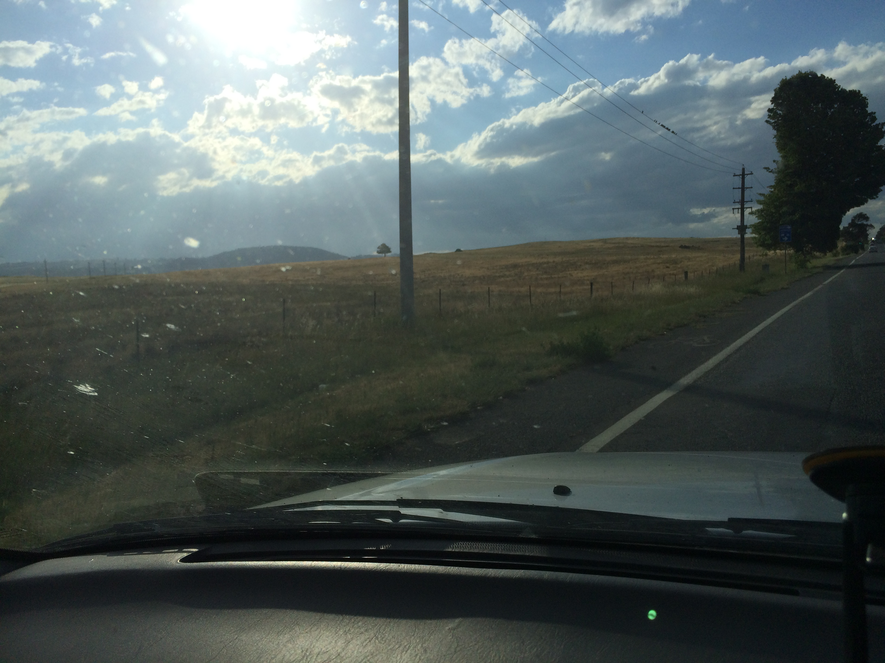

Importance of manners
As we twirl towards the end of yet another year it is a good time to pause and consider the year we left behind.
I have come across an interesting quote today:
“The hardest job kids face today is learning good manners without seeing any.”
Fred Astaire
This did cast my mind to this sunday and a flushed and agitated child interupting yet another fight in the car telling us how rude we have been not to say thank you to each other “this whole weekend”! Sometimes it is the children that prompt us to be better. Challenge, extend, learn and bridge that gap between the expenctation we have of our selfs and the actual reality.